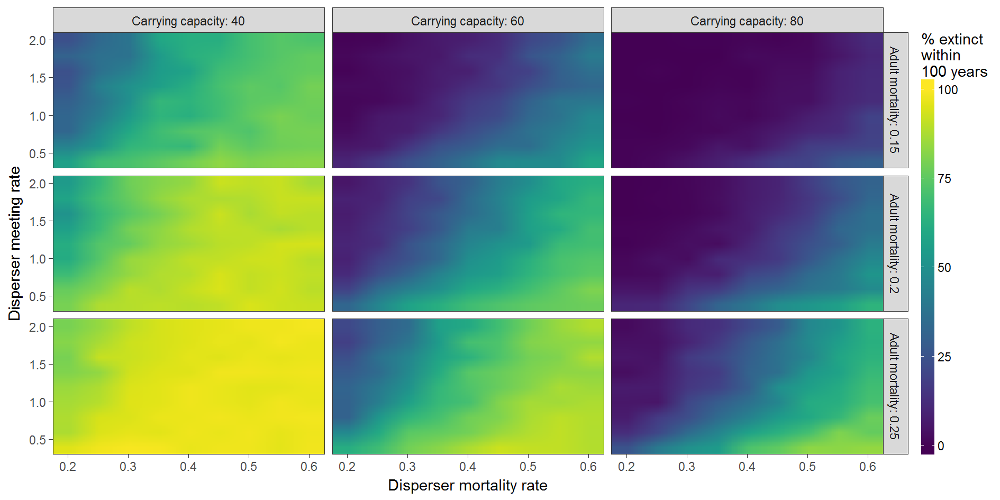

Sensitivity, Uncertainty, and Robustness Analysis
EES 4760/5760
Agent-Based & Individual-Based Computational Modeling
Jonathan Gilligan
Class #25: Thursday April 13, 2016
Sensitivity, Uncertainty, Robustness
Sensitivity, Uncertainty, Robustness
- Does ABM reproduce patterns robustly?
- or are patterns sensitive to specific values for parameters?
- How uncertain are the results?
- What can the model tell us about parameters that we can’t measure?
- Sensitivity Analysis focuses on small changes in parameters.
- Robustness Analysis looks at large changes in parameters.
Is high sensitivity good or bad?
- Bad: If model is testing a general theory, but is very sensitive to parameter values, that is evidence against the theory.
- Does model work across the entire range of observed values for parameters?
- Good: If the model is being used to evaluate parameters we can’t measure, higher sensitivity can mean less uncertainty about parameters.
Challenges: Computational Complexity
- We would like to do global sensitivity analysis:
- Vary all parameters over their entire ranges, in every combination.
- Can’t: computationally unfeasible.
- There are strategies to make global sensitivity analysis feasible, but they are complicated.
- Instead: local sensitiity analysis:
- Small variations around most likely values of parameters.
- Vary one parameter at a time, or multiple parameters?
- Interactions
- Sampling parameter values
- Random (Monte Carlo)
- Systematic (e.g., Latin Hypercube)
Example: Wild Dog Model
- Packs of wild dogs in nature preserve.
- Goal: Keep them from going extinct in next 100 years.
- Vary parameters:
- Mortality rate of adult dogs in pack
- Mortality rate of dispersers
- Meeting rate of disperser groups
- Carrying capacity
Analyzing data:
- Contour plots
- “Small multiple” plots
- Analyze four-dimensional data set using a grid of nine plots.

Example Research Model
Example Research Model
J.J. Jordan et al., “Third-party punishment as a costly signal of trustworthiness,” Nature 530, 473 (2016). doi:10.1038/nature16981
- Cooperation and Cheating
- Common situation:
- Everyone is better off if everyone cooperates than if everyone cheats.
- Once everyone else has chosen their action, any individual is better off cheating than cooperating.
- Nash equilibrium: Everyone making the best choice for himself produces the worst outcome for everyone.
- Opposite of the “invisible hand” in economics.
- Common situation:
Prisoner’s Dilemma
| B Cooperates | B Defects | |
|---|---|---|
| A Cooperates | 5, 5 | 0, 7 |
| A Defects | 7, 0 | 1, 1 |
- No matter what player A does, player B is better off defecting
- No matter what player B does, player A is better off defecting
- If both players defect, both are worse off than if both cooperated.
Tragedy of the commons
- Ten farmers share a pasture.
- A pasture can support 100 cows.
- If \(N_{\text{cows}} \le 100\), each cow produces $1,000 worth of milk per month.
- If \(N_{\text{cows}} > 100\), each cow produces \[\$1,000 \times \left(1 - \frac{(N_{\text{cows}} - 100)}{100}\right)\] worth of milk per month.
- Each farmer has 10 cows, each farmer earns $10,000 per month.
- One farmer adds 1 cow: total 101.
- .fragment Each cow produces \(\$1000 \times (1 - (101 - 100)/100) = \$990\).
- .fragment First farmer earns (11 $990 = $10,890),
- .fragment Everyone else earns $9,900.
- Each farmer adds 1 cow: total 110.
- Each cow produces $900. Each farmer earns $9,000.
Iterated games
- If only playing once, best strategy is to cheat, because it is rational for everyone else to cheat.
- If playing multiple turns, threat of punishment in future rounds promotes cooperation.
- It is generally costly to punish people.
- If someone cheats against you, it’s often worthwhile to punish them.
- If you see someone cheating against another person and you aren’t affected, is it worth your while to punish the cheater, even if it costs you?
- Does tragedy of commons inhibit people from punishing?
Theory
- Punishment sends a signal:
- Deters cheaters.
- Signals that you are trustworthy.
Game
Game
- Player has two roles: Signaler and Chooser
- Signaler can be either Trustworthy or Exploitative.
- Two kinds of signals: Helping or Punishing a third party.
- Two stages:
- Signalers can pay costs to send signals.
- Choosers decide whether to accept Signalers as partners.
- Cost of signaling can be either small (\(s\)) or large (\(\ell\))
Payoffs
- Payoffs after second stage are:
| Trustworthy Signaller | Exploitative Signaller | |
|---|---|---|
| Chooser Accepts | \(m\), \(r\) | \(-e\), \(r\) |
| Chooser Rejects | 0, 0 | 0, 0 |
- \(m\) is benefit of mutual cooperation, \(r\) is reward for being trustworthy, \(e\) is harm from exploitation.
Rational strategies

Agent-based model
Agent-based model
- Signaler randomly chosen to be Trustworthy or Exploitative.
- Chooser does not know Signaler type
- Evolution of strategies:
- Each agent plays a certain number of turns (a generation)
- Agents have probability of reproducing based on earnings from game.
- Offspring inherit strategy with some random “mutations”
Outcome of evolution

Human Game
Human Game
- Amazon Mechanical Turk (Internet)
- Human players assigned to one of three games:
- Signaler can only punish.
- Signaler can only help.
- Signaler can help and punish.
Trust Game
- To check whether signals are interpreted accurately by Chooser agents, run a second game:
- Chooser gets some money \(M\).
- Chooses how much to send to Signaler (\(x\)).
- Money sent to Signaler is tripled (Signaler get \(3x\))
- Signaler decides how much of the \(3x\) to return to Chooser.
- Chooser gets some money \(M\).
Perception of signaling:

- Chooser shows trust by sending more money to Signalers who punish and who help.
- Helping is a more powerful signal to Chooser than punishing.
- This matches theory of rational behavior.
Actual signaliing

- Signalers who punish are more trustworthy: return more money to Chooser.
- Helping is indeed a more accurate signal of trustworthiness.
Signaler Choice

- Signaler is less likely to punish when helping is an option.
Conclusions
- Evolved strategies of agents match both pure theory (rational strategy) and experimental results.
- It is advantageous for third parties to carry out costly punishments when the punishments can signal trustworthiness to others in the community.
- When there are less costly or more effective ways to signal trustworthiness, third parties are less likely to punish.
General ideas about agent-based modeling
- Model interactions between individuals
- Direct: individual-individual
- Indirect: individual-environment, environment-individual
- Focus on emergent properties
- Patterns or phenomena that were not deliberately programmed in, but arise spontaneously from interactions of agents with each other and with environment.
- Pattern-oriented modeling:
- Start simple, but aim to build in enough complexity to produce multiple patterns seen in nature, or predicted in theory.
- As you design model think about what kinds of “currency” you will use to assess its value.